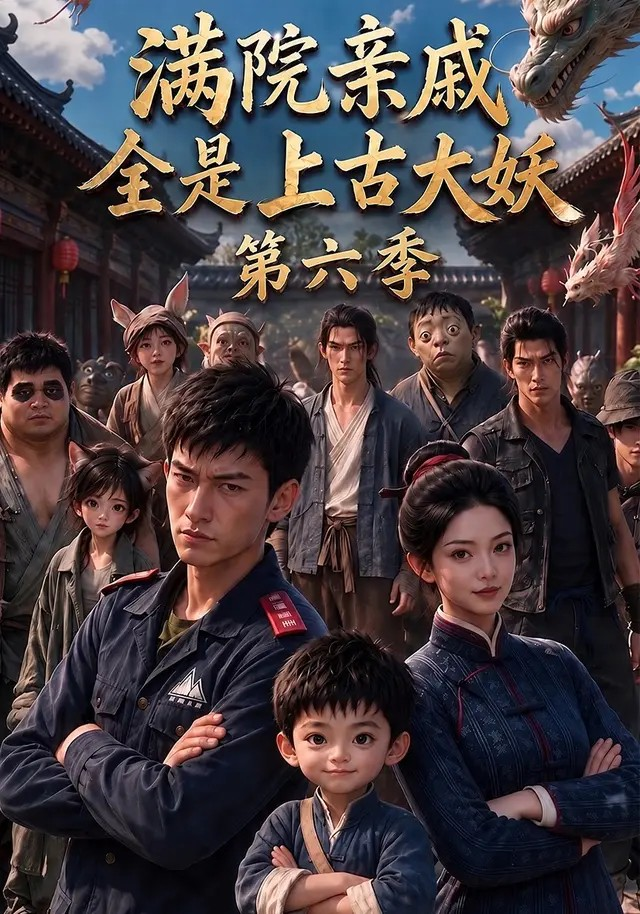

근거
근거와 결론
작품 밖의 연구와 업계 자료, 사회문화적 맥락을 거쳐 하나의 주장으로 모읍니다.
시청 동기와 서사적 만족을 외부 자료로 검증
연구 내용 더 보기
기존 서사의 정서적 보상과 AI 기술에 대한 새로운 호기심이 동시에 작용할 수 있습니다.
인기 AI 만화극 100편 중 억압 → 기회, 능력 획득 → 반격 구조가 90% 이상. 절반 가까이는 가까운 사람에게 상처받으며 시작합니다.
南方都市报, 2026.4.28- 같은 날 순위 1위와 9위가 거의 같은 줄거리, 《菩提临世》 계열
- 인물 이름까지 같은 작품 10편 이상
- “이름과 직업만 바꾸면 되는 빈칸 채우기”
기존 이야기 공식의 반복 + AI가 넓힌 표현 가능성
이론으로 읽기
해석의 뼈대는 司若 외 2026의 ‘소원 성취’입니다. 다른 이론은 반복이 쾌락이자 표준화라는 양면을 읽는 데 씁니다.
| 근거 | 핵심 내용 | 받쳐 주는 주장 |
|---|---|---|
| 司若, 高祎伟 2026, 《全球传媒学刊》 13(3) | 인기 숏드라마 100편 내용분석. 사건과 인물 유형의 조합이 ‘소원 성취’ 중심의 정서적 만족을 만든다 | 연구 문제 1, 2. 주장의 학술적 뼈대 |
| Hu, R. & Li, Y. 2026, Bingeing on daydreams | 셴양시 시청자 24명 경험표집과 인터뷰, 댓글 4,189개 분석. 숏드라마를 ‘매운 과자’처럼 싸고 가벼운 스트레스 해소로 쓴다 | 정서적 대리만족, 시청자 쪽 보조 근거 |
| 김윤희 2026, 《대중서사연구》 32(3) | 회귀 서사의 관습은 대리만족을 주지만 사회적 모순을 가릴 수 있다. 에코의 ‘위안의 장치’ | 기준작의 회귀 구조 해석 |
| Cawelti 1976 | 공식 서사는 예측 가능성의 안정감과 현실 도피를 함께 준다. 표준화와 약간의 변주가 함께 있어야 사랑받는다 | 검증된 공식이 지루함이 아니라 쾌락이 되는 이유 |
| Adorno & Horkheimer 1947, 「문화산업」 | 문화산업은 표준화된 상품을 대량 생산하고, 제목과 얼굴만 바꾼 ‘사이비 개성’으로 차이를 연출한다 | AI가 획일화를 심화한다는 비판적 해석 |
| Zillmann 1988, 기분 관리 이론 | 사람들은 지루함과 스트레스를 풀도록 미디어를 고른다 | 즉각적 자극의 기능 |
| Katz 외 1974, 이용과 충족 | 수용자는 목적을 갖고 매체를 골라 욕구를 채운다 | ‘왜 보는가’를 설명하는 기본 틀 |
| 간헐적 강화, 자이가르닉 효과 | 불확실한 보상과 끝나지 않은 이야기가 다음 화를 보게 만든다 | 회차 끝 갈고리와 1~2분 단위 보상 |
| Mori 1970, 불쾌한 골짜기 | 인간과 거의 같은 인공 얼굴은 오히려 거부감을 준다 | 그런데도 본다면 얼굴보다 이야기 보상이 크다는 뜻 |
고전 이론은 원전 서지 정보만 적었습니다.
전문가와 업계의 말
AI 배우의 입모양과 표정은 실사보다 조금 부족하지만, 시청자가 공감하면 받아들여진다.
허시우산 何秀山, 持械入宋 총감독. 21财经 2026.11.8
AI가 제작비를 낮출수록 좋은 이야기와 연출 아이디어가 결정적이 된다.
탕지리 唐季礼, 홍콩 감독, 베이징국제영화제 AIGC 심사위원장. 21财经 2026.11.8
정품화가 숏드라마의 존립 기반이다.
허비아오 何飚, 국가광보총국 부국장, 2026.11.5 포럼. 21财经 2026.11.8
AI의 강점은 하늘의 신선 싸움이지 농촌 집 앞 다툼이 아니다.
왕환 王欢, 周图文化 대표. Sixth Tone 2026.8.24
숏드라마는 빠르고 감정적으로 퍼지기 때문에 진심이 담길수록 넓게 전해진다.
탕융화 汤拥华, 화둥사범대 중문과 교수. 中国城市报 2026.4.27
갈고리와 爽点이 약하면 대본을 거의 다시 쓴다.
원루 温儒, 숏드라마 작가. 新榜/钛媒体
발언은 출처 기사의 취지를 옮긴 것입니다.
AI는 제작을 확장하지만 흥행을 보장하지는 않는다
1. 만들기는 쉬워졌다
제작 기간과 외주 단가
2. 많이 만든다고 뜨지는 않는다
1,000편 가운데 1편도 되지 않습니다. 2025년 만화극도 6만 편 중 96편, 0.16%만 1억 뷰를 넘었습니다.
21财经 / 蓝鲸财经, DataEye제작 편수를 줄이고 대본과 영상 완성도에 집중하는 흐름입니다. 허비아오 부국장은 정품화를, 탕지리 감독은 좋은 이야기를 강조합니다.
21财经, 2026.11.8“AI가 실사보다 인기”가 아니라 “어떤 AI 작품이 왜 선택받는가”를 묻는다.
플랫폼과 산업 수치 표 전체 보기
| 항목 | 수치 | 출처 |
|---|---|---|
| 红果 하루 이용자 | 1.68억 명, 2026.7, 전년보다 +107%. 아이치이, 텐센트비디오, 유쿠, 망고TV의 합보다 많음 | 中新社/21财经, 2026.11.8, QuestMobile 인용 |
| 红果 한 달 이용자 | 3.57억 명 | 西南证券 2026 Q4 전략 |
| 1인 하루 이용 시간 | 151분, 2026 3분기 | 21财经, 2026.11.8 |
| 중국 숏드라마 이용자 | 8.51억 명, 2026.5 | Sixth Tone, 西南证券 |
| 시장 규모 전망 2026 | 숏드라마 전체 1,210억 위안, 그중 AI 드라마와 만화극 400억 위안 이상 | 西南证券 |
| 신규 작품과 AI 비중 | 2026 1분기 약 12.8만 편 중 95% 이상 AI, 2분기는 64% | Sixth Tone, 2026.8.24, 중국네트워크시청협회 자료 |
| 히트율 | 2026 1분기 0.1% 미만 / 2025년 만화극 6만 편 중 1억 뷰 돌파 96편, 0.16% | 21财经 2026.11.8 / 蓝鲸财经, DataEye |
| 제작비 | 실사 30~40만 위안, 스태프 약 40명 → AI 10만 위안 미만, 2만 위안 미만도, 10명 미만 | Caixin, 2026.6.1 |
| 제작 기간 | 수개월 → 7~15일 / 실사 1~3개월 → AI 20~30일 | 21财经 2026.11.8 / 蓝鲸财经 |
| 외주 단가 | 분당 800~1,000위안 → 약 200위안, 연산비 수준 | Caixin |
红果는 실사극, AI극, 만화극을 따로 분류하고, 시장 통계는 두 AI 유형을 합치는 경우가 많습니다. 수치는 원 출처가 밝혀진 것만 썼습니다.
규제와 플랫폼 대응
- 2026.10.21红果, 휴식과 수면 알림 추가, 코인 기능 폐지 계획21财经 2026.11.8
- 2026.9.1《微短剧发展管理办法》 시행: AI 숏드라마는 매 회 잘 보이는 곳에 표시, 금지 내용 11개 항목光明网, 2026.8.2
- 2026.7.22红果, AI 인물 창작 규범 공고: 비슷한 ‘AI 얼굴’ 반복 단속IT之家
- 2026.5 무렵红果, 실사작 최소수익 보장을 15억 위안 이상으로 확대, 편당 평균 약 60% 증가界面 Global
- 2026.4.7红果와 더우인, 심사 기준 강화南方都市报
- 2026.4.1광전총국 규정 시행: AI 생성 숏드라마와 만화극 사전 등록, AI 표시 의무南方都市报
- 2026.2바이트댄스 Seedance 2.0 출시, 초당 약 1위안. 红果 중소 실사작 보장 축소Sixth Tone, Caixin
- 2025.9.1《人工智能生成合成内容标识办法》 시행: AI 생성물 표시 의무화科技日报
추천 알고리즘이 묶어 보여 주는 작품
기준작 페이지에 함께 추천된 AI 작품, 2026.11.2 조회. 장르는 달라도 금빛 큰 제목, 정면을 보는 미형 얼굴, 회귀와 역습이라는 문법이 같습니다.


포스터 출처: 红果短剧 / 각 작품 공식 포스터
기준작 댓글의 “전개가 빠르고 그 시대답다”, “성실하게 돈을 번다”. 한편 “보다 보면 뇌가 멍해진다”는 담론과 중독성 비판도 함께 나타납니다.
이 구조는 한 작품이 아니라 플랫폼 전체에서 대량으로 생산되고 소비되는 흐름입니다. 동시에 획일화에 대한 피로와 규제도 함께 나타납니다.
예상 반론과 대응
반론 1빠른 갈등과 보상은 실사 숏드라마도 똑같다
맞습니다. 그래서 주장을 ‘AI가 공식을 만들었다’가 아니라 ‘AI가 기존 공식을 더 싸고, 더 많이, 더 촘촘하게 찍어 낸다’로 좁힙니다. 중국 언론도 AI가 사이다 우선 작법을 만든 게 아니라 그 길을 넓혔다고 봅니다. 小镇是非多와의 1:1 비교가 이 차이를 보여 줍니다.
반론 2보는 이유는 내용이 아니라 무료, 자동재생, 추천 알고리즘이다
플랫폼 설계가 시청을 늘리는 건 사실입니다. 다만 같은 플랫폼에서도 히트율은 0.1% 미만입니다. 플랫폼은 조건이고, 어떤 작품이 뜨는지는 내용이 가릅니다.
반론 3열도는 조회수도 아니고 매일 바뀐다
맞습니다. 기준작도 11월 2일 5,915만에서 9일 4,873만으로 변했습니다. 수치는 날짜별 기록으로만 쓰고, 통합 热播榜 18위와 AI剧热播榜 9위처럼 ‘순위에 올랐다’는 사실을 주된 근거로 씁니다.
반론 4AI 숏드라마 대부분은 망하는데 열광이라 할 수 있나
히트율 0.1% 미만은 오히려 질문을 날카롭게 합니다. ‘살아남은 AI 숏드라마는 무엇을 더 잘하는가’를 묻는 것이고, 기준작은 그 살아남은 사례입니다.
반론 5실사도 아직 1위를 한다
十八岁太奶奶驾到 5를 반대 사례로 인정합니다. 실사는 배우에 대한 애착, 시리즈 IP, 연기의 뉘앙스로 이긴다는 분석이 있습니다. 우리 주장은 ‘AI가 실사를 대체한다’가 아니라 ‘AI는 공식형 보상 구조에 특화돼 있다’입니다.
반론 6AI 얼굴이 불편하다는 사람도 많다
红果가 ‘고빈도 AI 얼굴’을 단속한 건 그 피로감이 실제로 있다는 뜻입니다. 그런데도 상위권을 지킨다면 시청자가 얼굴의 어색함보다 이야기 보상을 더 크게 여긴다고 볼 수 있습니다.
연구의 범위와 한계
红果는 실사극, AI극, 만화극을 따로 분류하고, 시장 통계는 두 AI 유형을 합치는 경우가 많습니다.
전체로 일반화하지 않고 南方都市报 100편 분석과 司若 외 100편 분석으로 보완합니다.
중국 보도 중에는 AI가 쓴 기사도 있어, QuestMobile, DataEye, 중국네트워크시청협회처럼 원 출처가 밝혀진 수치만 씁니다.
자막과 댓글은 중국어 원문을 번역했고, 장면 시간, 반전 횟수, 얼굴 유사도는 팀의 관찰 결과입니다.
자료 → 해석 → 논거 → 주장
AI 숏드라마의 매력은 “익숙한 정서적 보상”과 “새로운 시각적 경험”의 결합에서 찾을 수 있다.
“AI가 실사보다 인기”가 아니라 “어떤 AI 작품이 왜 선택받는가”를 묻습니다.